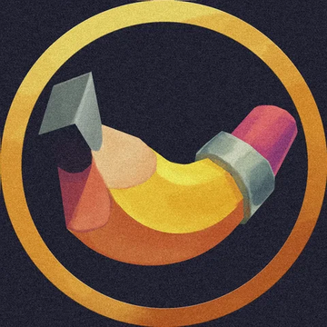

KAIZERKLIMACHThis page has no server of its own — every action here is a direct commit to your GitHub repo via a Personal Access Token. Changes go live automatically through GitHub Pages after each commit (Steam/itch links additionally trigger the "Sync game metadata" Action, which takes a minute or two).
Create a token at github.com/settings/tokens (fine-grained token, scoped to this one repo, with Contents: Read and write permission). The token is stored only in this browser's local storage — never committed anywhere.
Paste a store page link. A GitHub Action fetches the title, studio, description and screenshots automatically and publishes a card — no need to type any of that by hand.
Copy your images into the matching folder in your local clone — assets/gallery/misc/,
assets/gallery/props/, assets/gallery/animations/ or
assets/gallery/tiles/ — then git push. Once the push is on GitHub, click
Scan repository below: it reads whatever's actually in those four folders and rebuilds
data/gallery.json to match, category by category. Re-run it any time you add, rename or
remove files — titles you've edited here are kept where the file path is unchanged.